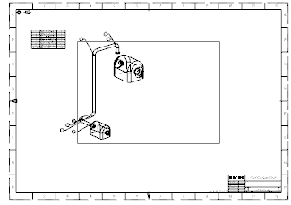
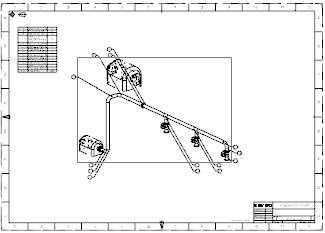

Use the same procedure to add a view and a parts list to the remaining drawing sheets in the booklet.
|
 |
|
 |
|
Note |
If you forget to configure the display properties of the secondary objects before you add the view to the drawing sheet, go to Preferences→Drafting Automation, and then select the color, font, and width of the visible and hidden lines. After clicking OK, you must update the drafting view. |
Close all parts when you have finished.